International Symposium on Interdisciplinary Ecology, National Cheng Kung University, Tainan, 4–5 November 2026
Science Career SharingGroup assignments will be emailed to participants on .

The International Symposium on Interdisciplinary Ecology is jointly organized by the College of Bioscience and Biotechnology, Department of Life Sciences, Department of Biotechnology and Bioindustry Sciences, and Institute of Tropical Plant Sciences and Microbiology at National Cheng Kung University (NCKU).
The symposium brings together researchers from diverse ecological fields to exchange ideas, share research insights, and foster interdisciplinary and international collaboration.
Beyond scientific exchange, the event aims to strengthen the College’s global research partnerships while providing students with opportunities to engage with international scholars, explore scientific career pathways, and broaden their global perspectives.
Through these interactions, we hope to inspire future scientists and build lasting connections across disciplines and borders.
The symposium will feature presentations across three scientific sessions, bringing together researchers working across diverse ecological systems, scales, and disciplines.
Each invited speaker will give a 15–20-minute presentation, including Q&A, providing an opportunity to share their research and engage in discussion with participants.
In addition to the scientific sessions, the program will include Science Career Sharing and Field Fun Time Sharing for students, as well as opportunities for academic exchange, networking throughout the symposium.
Dean: Prof. Ju-Ming Wang · Vice Dean: Prof. I-Ching Chen
Moderator: Prof. Cheng-Han Tsai
Oceanic Islands as Seasonal Aggregation Sites for Cetaceans
From Stranding to Conservation Policy: Addressing the Challenges of Threat Assessment and Protection for Finless Porpoises in the Taiwan Strait
Phytoplankton bloom dynamics under climate change
Empirical dynamic modeling for ecosystem-based management
Moderator: Prof. Cheng-Han Tsai
Machine learning assisted intertidal rocky shore biodiversity data acquisition
Visual ecology of marine invertebrates
The Unseen Majority: Decoding Marine Plankton Diversity Through Universal DNA Barcoding
Moderator: Prof. I-Ching Chen
Moderator: Prof. I-Ching Chen
Moderator: Prof. Chao-Li Huang
The function and evolution of breeding color in a female lizard
The Cultural Evolution of Prestige and Credibility
Moderator: Prof. Yin-Tse Huang
Microbial Dark Matter in Ecology: What Can Metagenome-Assembled Genomes Really Tell Us?
Harnessing "Earth’s Breath": Belowground fire-adaptive strategies of pines in negotiating litter decomposition and nutrient cycling
GlobalFungi.com: a new era in fungal biogeography and ecology
Who Domesticated Whom? Beetles, Fungi, and the Origins of Insect Agriculture
Moderator: Prof. Takefumi Nakazawa
Theory meets natural history: Bringing individuals back into community ecology
Environmental DNA as a Window into Marine Ecosystem: Lessons from the ANEMONE Network
Theory and experiments in eco-evolutionary dynamics
Navigation to nectar source in tiny flower-visiting fruit flies
Climate extremes reshape the temporal structure of seasonal communities
Moderator: Prof. I-Ching Chen
Uncovering Functional Similarity and Key Representative Chemicals in Forest Atmospheres from Time-series Data
Integrating surveys, tracking and long term monitoring to identify key habitats and threats for migratory birds
Agricultural ponds: Australia’s hidden nature-based solution?
Revisiting the vulnerability of mountain biota under rapid warming
Meet the international and NCKU scholars contributing to the symposium’s three scientific sessions.
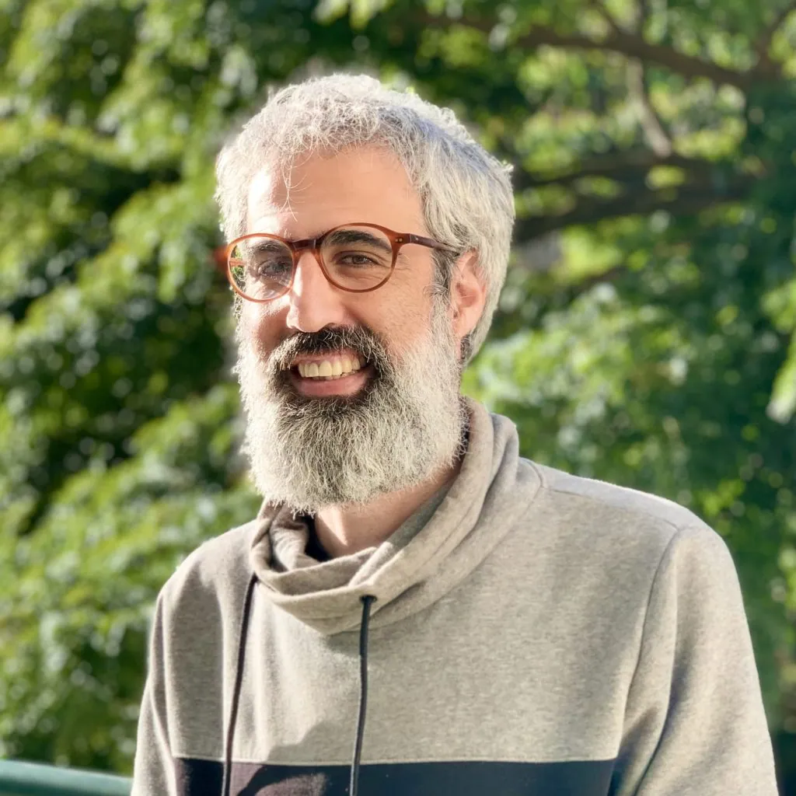
MARE – Centro de Ciências do Mar e do Ambiente, Madeira
Portugal · Session 1Chonnam National University
Korea · Session 1
University of Bristol
UK · Session 1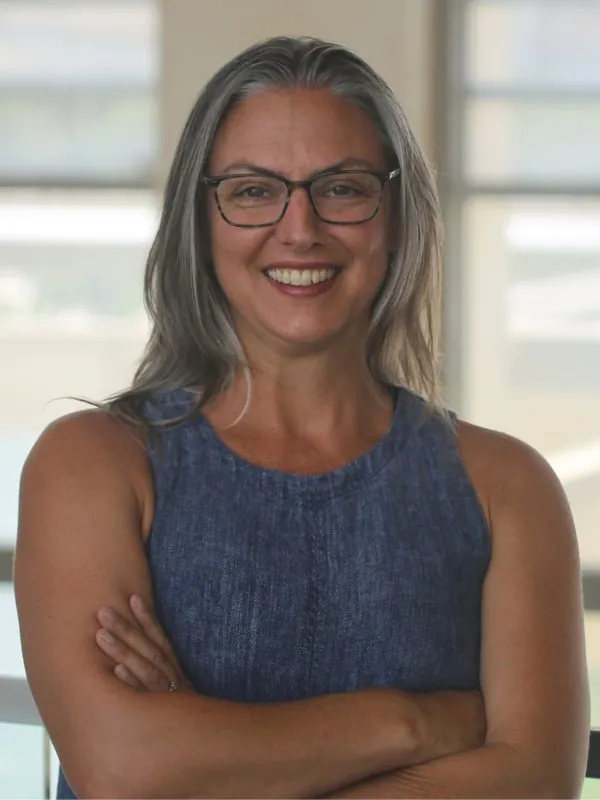
Texas A&M University
USA · Session 2Universiti Teknologi Malaysia
Malaysia · Session 2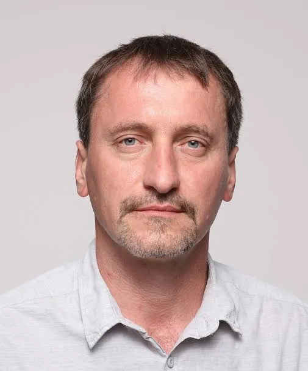
Institute of Microbiology of the Czech Academy of Sciences
Czech Republic · Session 2
Tohoku University
Japan · Session 3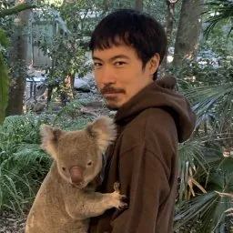
National Institute of Genetics
Japan · Session 3
University of Tsukuba
Japan · Session 3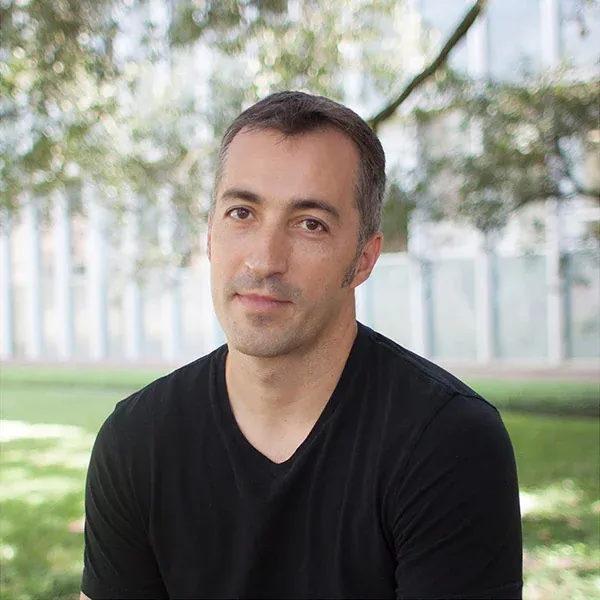
Rice University
USA · Session 3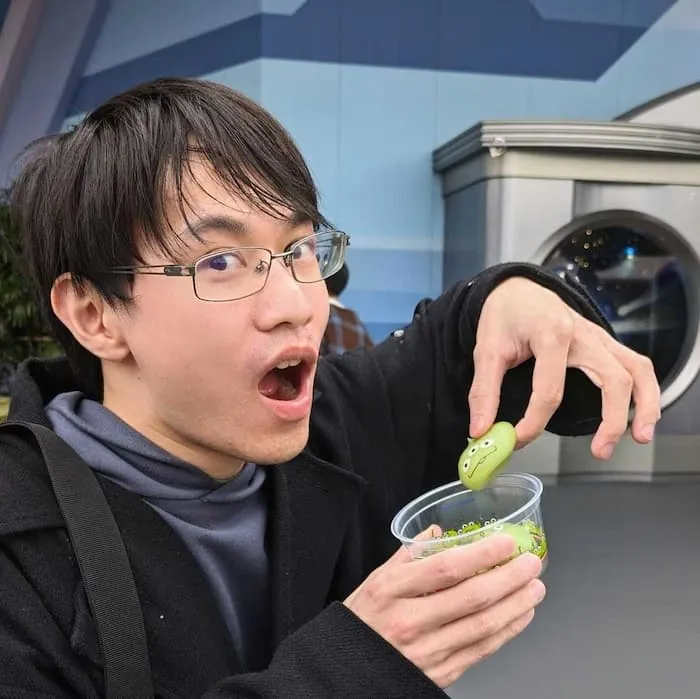
Kyushu University
Taiwan · Session 3Nature Research Centre (Gamtos tyrimų centras/GTC)
Lithuania · Session 3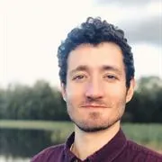
RMIT University
Australia · Session 3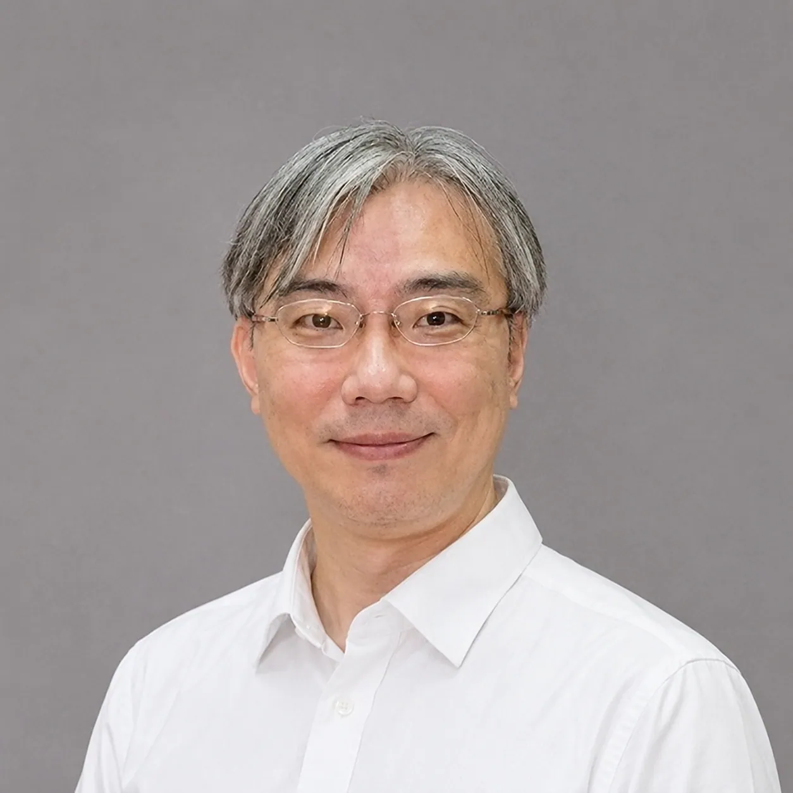
National Cheng Kung University
Taiwan · Session 1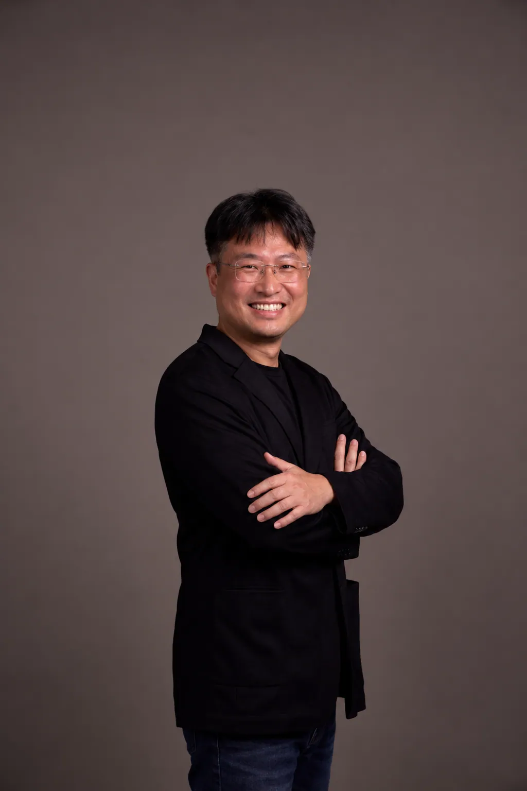
National Cheng Kung University
Taiwan · Session 1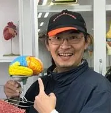
National Cheng Kung University
Taiwan · Session 1National Cheng Kung University
Taiwan · Session 1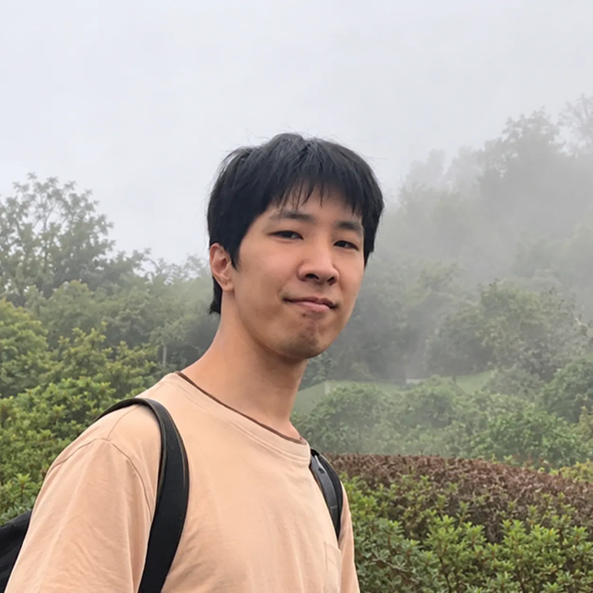
National Cheng Kung University
Taiwan · Session 2
National Cheng Kung University
Taiwan · Session 2National Cheng Kung University
Taiwan · Session 2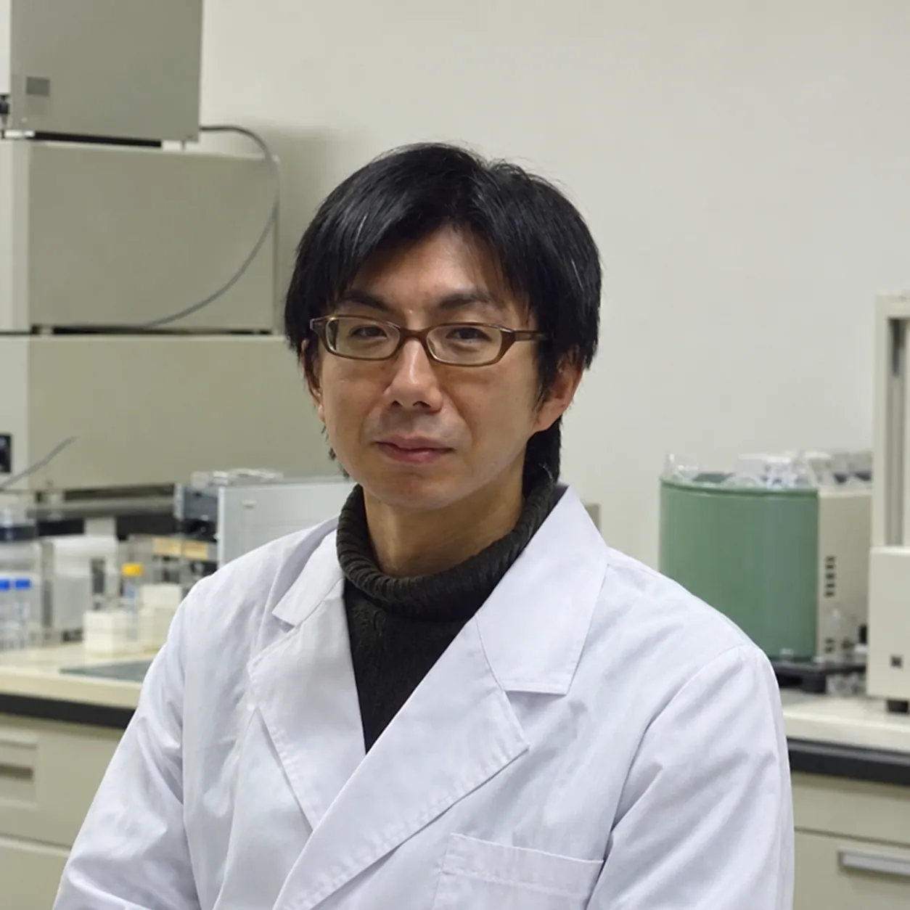
National Cheng Kung University
Japan · Session 3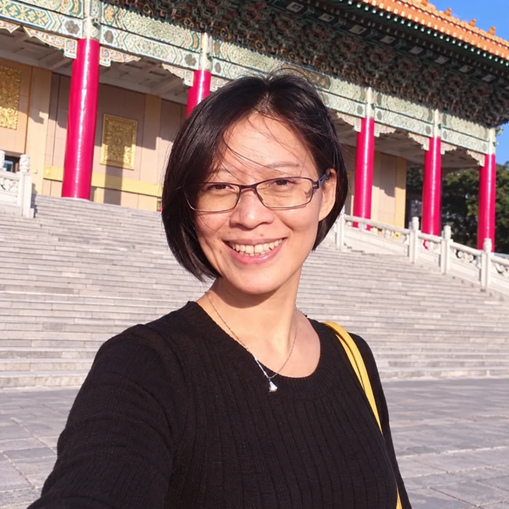
National Cheng Kung University
Taiwan · Session 3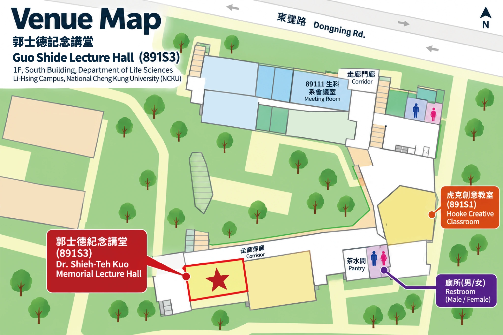